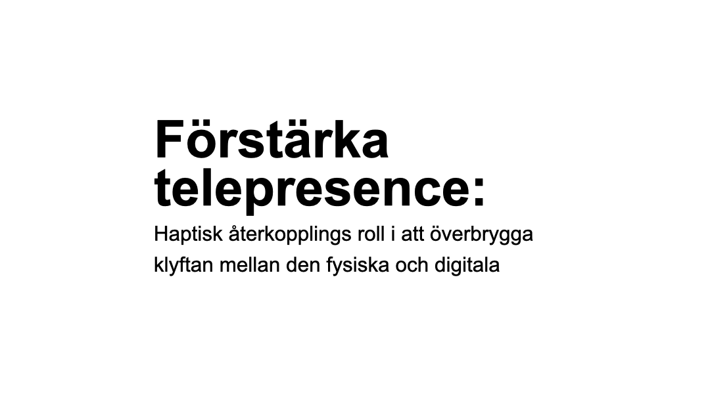
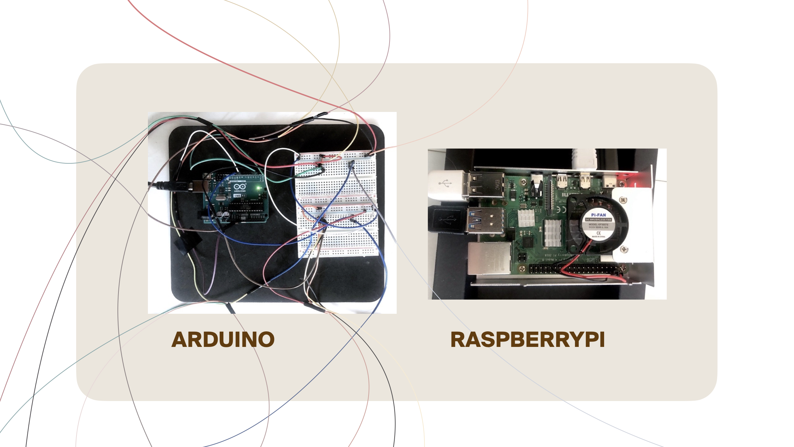
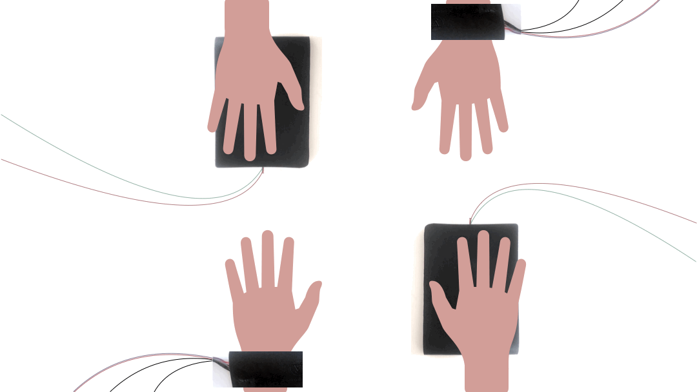
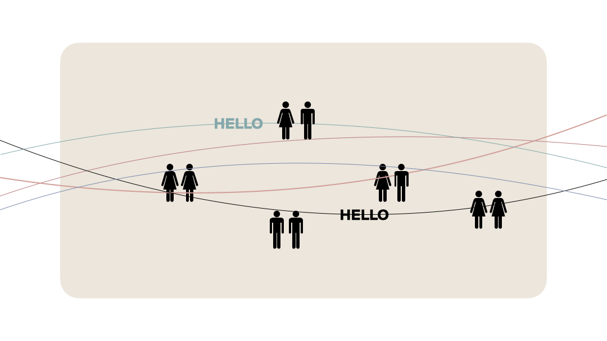
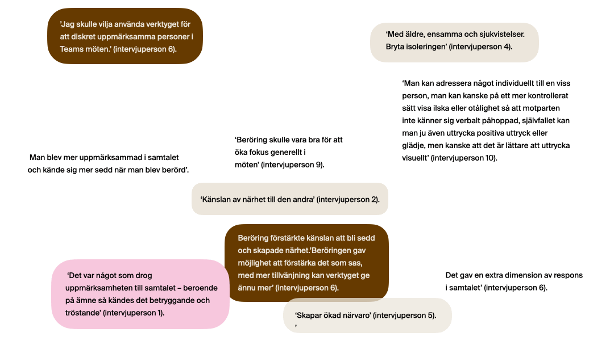

ZZZzzz
Haptisk återkoppling – en episk rytm!
Hej där! Prova haptisk återkoppling genom att skanna QR-koderna. De är
perfekta att använda under Zoom-möten för att lägga till en extra
dimension i kommunikationen! Eller bara för att låta någon veta att du
tänker på dem.
Vibrations budskap
Hahaha – kul sagt! Bra där! – beröm någon. Hallå – somna inte...
ZZZzzz – sååå långt budskap.

Resan mellan digitala och fysiska världar medför nya utmaningar och
möjligheter. Haptisk feedback, som simulerar fysiska förnimmelser,
spelar en avgörande roll för att minska klyftan mellan dessa världar
genom att förbättra användarupplevelsen och minska kognitiv
belastning. Denna studie undersöker hur haptisk feedback påverkar
telepresence och betydelsen av användarnas attityder till ny teknik.

Integrationen av den fysiska och den virtuella världen i vår digitala
tidsålder har skapat en hybridtillvaro. Detta kan observeras i olika
aspekter av livet, till exempel arbete, social interaktion,
underhållning, utbildning och konsumentbeteende. Människor navigerar
nu mellan fysiska och digitala upplevelser samtidigt, vilket innebär
nya utmaningar för design och teknikutveckling.

Genom att använda flow-teorin och Technology Acceptance Model (TAM)
belyser studien hur engagemang, återkoppling och användaracceptans
påverkar användarupplevelsen i interaktionen mellan den digitala och
den fysiska världen.

En iterativ forskningsansats, baserat på forskning genom design,
användes för att skapa och utvärdera en prototyp som implementerar
haptisk feedback.

Plattans rörelse överfördes till mini vibrationsmotorer som var
integrerade i ett armband som bars av den andra deltagaren. Studien
innebar att deltagarna placerades framför en skärm och kontaktade den
andra deltagaren via Zoom, med hörlurar för att eliminera
distraherande bakgrundsljud. Under samtalet kunde de använda digital
beröring för att betona vad de talade om vilket skapade en ny
dimension till samtalet.

Genom att förstå hur människor uppfattar och interagerar med fysiska
objekt och kopplingen mellan den fysiska och digitala världen kan en
omfattande förståelse uppnås för fysikens natur och dess förhållande
till mänsklig perception. Studien har en en tvärvetenskaplig ansats
som kombinerar teknik och forskning om mänskligt beteende.

Resultaten visar att haptisk feedback kan förbättra känslan av
telepresence och engagemang i digitala miljöer, samt betydelsen av
användarens attityd till ny teknik. Dessa fynd har implikationer för
design av digitala system, särskilt inom områdena interaktionsdesign,
människa-datorinteraktion (HCI) och datorstött kooperativt arbete
(CSCW). Genom att kombinera tekniska och beteendevetenskapliga
perspektiv, bidrar denna studie till kunskap för att utveckla
intuitiva och engagerande digitala upplevelser.
{kind=link}
{kind=link}
{kind=link}
{kind=link}